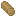

Изделия из стекла
Изделия из стекла
Самые простые изделия из стекла — это стеклянные панели и блоки стекла. Для их создания начните с трубки стеклодува со стеклянной шихтой, а затем выполните разлив.
- разлив на стол используется для создания стеклянных панелей
- Разлив в резервуар используется для создания блоков стекла
Стекло также может быть окрашено перед его разливом для придания ему цвета. Цвет зависит от типа партии стекла и добавленных порошков.
Каждый тип стеклянной шихты придает стеклу уникальный естественный цвет. Силикатные шихты могут быть окрашены во множество цветов, оливиновые и вулканические шихты могут быть окрашены в меньшее количество цветов.
Литьё на стол
Стеклянные панели делаются с помощью разлива на стол. Стол для литья делается путем размещения до шестнадцати обитых латунью блоков в одной плоскости (см. далее).
1. Добавьте стеклянную шихту в трубку стеклодува.
2. Нагрейте трубку до Начинает краснеть.
3. Нажмите ПКМ трубкой по верхней части стола.
4. Нажмите ПКМ с лопаткой во второй руке, чтобы разгладить.

После охлаждения стекло можно получить с помощью пилы с напылением.
Литьё в резервуар
Стеклянные блоки делаются с помощью литья в резервуар. Резервуар делается путем окружения пустого блока со всех сторон, кроме верхней, обитыми латунью блоками.
1. Добавьте стеклянную шихту в трубку стеклодува.
2. Нагрейте трубку до Начинает краснеть.
3. Нажмите ПКМ трубкой по дну резервуара.


После охлаждения стекло можно получить с помощью пилы с напылением.
Окрашивание стекла
Стекло имеет естественный цвет стеклянной шихты, которая была использована. Другие цвета могут быть получены с помощью миски.
Для этого поместите миску на землю, и нажмите ПКМ по ней с желаемым порошком. Перед разливом используйте трубку на миске, чтобы добавить порошок в стекло.
На следующих страницах отражены все возможные комбинации стеклянных шихт и порошков для создания стекла всех цветов.
Цвета окрашивания
- Белый: силикатное/гематитовое + сода
- Чёрный: любое + графит
- Серый: любое + графит + сода
- Светло-серый: любое + графит + 2x сода
- Фиолетовый: любое + железо + медь
- Коричневый: любое + никель
- Бирюзовый: невулканическое + медь + сапфир
- Зелёный: силикатное/гематитовое + железо
- Лаймовый: силикатное/гематитовое + железо + сода
- Светло-голубой: силикатное + лазурит
- Синий: силикатное + медь
- Красный: силикатное/гематитовое + олово
- Жёлтый: силикатное/гематитовое + серебро
- Оранжевый: силикатное + пирит
- Пурпурный: силикатное/гематитовое + рубин
- Розовый: силикатное + золото
- Тонированное: несиликатное + аметист
Доступность цветов стекла
Доступность цветов стекла.
'C' — прозрачное,
'T' — тонированное.
Все цвета могут быть изготовлены только с определенными стеклянными шихтами.
C | T | |||||||||||||||||
|---|---|---|---|---|---|---|---|---|---|---|---|---|---|---|---|---|---|---|
Silica | ||||||||||||||||||
Hematitic | ||||||||||||||||||
Olivine | ||||||||||||||||||
Volcanic |
Legend
Can be Crafted
Cannot be Crafted
Default Color


Steps
Выдуть
-

Ужать
-

Разгладить
Выдуть
-

Отпилить
Стекло для лампы является необходимым компонентом для создания ламп.


Steps
Выдуть
-
Ужать
-

Покрутить
-
Отпилить
Банки тоже делаются из дутого стекла, но только из силикатного или гематитового.

Steps
Выдуть
-
Ужать
-
Отпилить
Пузырьки делаются из любой шихты, но их качество будет разным.
Steps
Выдуть
Вытянуть
-
Покрутить
-
Отпилить
Линза используется для создания подзорной трубы, компаса и датчика дневного света.